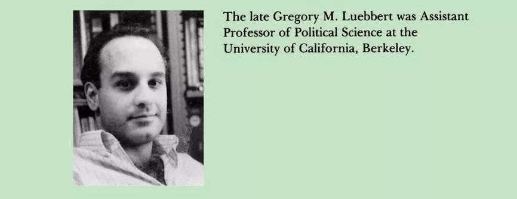

收录于合集
晚唐诗人崔珏在《哭李商隐》（其二）中写道：“虚负凌云万丈才，一生襟抱未曾开。鸟啼花落人何在，竹死桐枯凤不来。良马足因无主踠，旧交心为绝弦哀。九泉莫叹三光隔，又送文星入夜台。”崔珏对李商隐的才华做了高度评价，寄托了对李商隐的深切怀念。而在美国政治学会的比较政治分会中，最佳著作奖与论文奖均以同一位英年早逝的学者冠名。他通晓七国语言，留下的作品时至今日依旧启迪后人，但生命却永远定格在了32岁。他就是加州大学伯克利分校政治学系前助理教授格利高里·鲁伯特（Gregory M. Luebbert）。

鲁伯特毕业于斯坦福大学，并于1986年出版了他主编的《比较民主：欧洲与以色列的政策制定与统治联盟》（Comparative Democracy: Policy Making and Governing Coalitions in Europe and Israel）。当然，鲁伯特最重要的作品当属他的遗作《自由主义、法西斯主义或社会民主主义》（Liberalism, Fascism or Social Democracy: Social Classes and the Political Origins of Regimes in Interwar Europe）。在这本书中，作者分析了两次世界大战之间西欧为何出现了三种不同的政体，并以阶级分析法生动地描绘了政体起源的社会基础。在鲁伯特看来，三种可互为替代的政体方案与国家对劳动阶级的回应息息相关。
中产阶级抑或是资产阶级是欧洲自由主义政体的坚定支持者，因此能否形成自由主义民主的关键在于能否形成这一阶级所掌控的权力。在一战之前，英国、法国和瑞士形成了较为稳固的自由- 劳工联盟（liberal-labor cooperation），一方面工人阶级的利益得到了一定保障，另一方面实现了中产阶级的稳定性与凝聚力。但与此同时，这种联盟却削弱了工人阶级的力量，以劳工为基础的政党也缺少组织力与凝聚力。因此在两次世界大战之间，工人阶级既在意识形态上不倾向于挑战现有结构，也不具备相应的组织能力。自由主义者通过建立中间偏右的阶级联盟取代了自由- 劳工联盟，并进一步稳固了自由主义民主的秩序。
但在欧洲的其它地区，中产阶级处于分裂的状态，自由主义者在一战前也未能与劳工结盟，从而为社会民主主义或法西斯主义铺平了道路。20世纪初，工人阶级与社会主义政党得到了极大的发展，声势浩大的工人运动挑战着传统的自由主义政治经济秩序。在此情境下，政体类型与中农阶级所采取的联盟策略至关重要。在丹麦、瑞典和挪威，代表中农的政党与工人阶级政党结盟，议会中出现了“红绿”联盟（“red- green” coalitions），政府在保持民主政治的同时以社会福利的方式回应工人阶级的需求，由此形成了社会民主主义。而在德国、意大利和西班牙，中农选择与城市中产阶级联盟从而形成了“棕绿”联盟（“brown- green” coalitions），为大肆压制工人阶级的极右翼法西斯主义政党提供了基础。
关于法西斯主义的社会基础，学界长期存在争论。在鲁伯特的老师李普塞特（Seymour Martin Lipset）看来，法西斯的支持者和社会基础是下层中产阶级，因为下层阶级对于民主作为一种政治制度的信奉远不如城市的中产阶级和上层阶级，极端主义反而对他们更具有吸引力。而摩尔（Barrington Moore）与格申克龙（Alexander Gerschenkron）则认为，地主阶级才是形成法西斯主义的根源。尤其是在摩尔的经典研究中，依赖于压迫型劳动的地主阶级被视作民主最大的阻碍，他们通过控制农民而支持法西斯。然而，鲁伯特通过详实的数据表明，德国的地主精英并没有获得农民大量的选票。农村地区虽然支持法西斯政党，但主要在中农所聚集的地区而非土地精英聚集区。
《自由主义、法西斯主义或社会民主主义》大概是《专制与民主的社会起源》之后最为出色的一部将阶级基础与政治制度相联系的作品，并成为比较历史分析的经典作品。而鲁伯特更加强调阶级基础之外政党与制度的作用，从而为结构主义的宏观因果分析增添了能动性的部分。在研究方法上，鲁伯特强调本书是对“少量的‘主要变量’——其重要性能够通过明确的、经验上可证伪的命题来检验——的研究”，并巧妙地运用密尔法排除了许多强有力的竞争性解释。然而，本书似乎疏于对历史发展的描述，而更多的将笔墨放在了历史证据对因果假设的测定，因此此书可能更有布洛维所谓的“冻结历史”的弊端了。
当然，这也无法掩盖鲁伯特在方法论运用上的洞见。后世的方法论研究者表明，鲁伯特的观点同样适用于冷战期间东南亚极端右翼政权的兴起。通过选择普遍性的变量与机制（general variables or mechanisms）以及立足对案例间差异的解释（seek out representative variation），基于小案例的比较历史分析同样可以实现外部有效性（external validity）。
最为遗憾的是，这部1991年出版的著作只是作者的“残篇”。在1988年5月24日，酷爱运动的鲁伯特在一起帆船竞赛中不幸罹难。虽然本书此时基本完成，但作者尚未能完成最后一章对理论的总结与升华。欧洲民主化的历史起源，有赖于后来者继续探索了。
在成书至今的三十年间，我们见证了民主化研究的诸多变化：“转型学”的潮起潮落、结构主义式微和精英视角的兴起、量化研究的普遍运用以及前几年兴起的“民主化研究的历史转向”等等。2018年，哈佛大学政府系教授泽布莱特（Daniel Ziblatt）凭借《保守党与民主的诞生》（Conservative Parties and the Birth of Democracy）获得了包括“摩尔奖”在内的诸多奖项。这位毕业于鲁伯特曾经执教过的大学的70后学者，同样致力于探索第一二波民主化时期欧洲民主的历史起源。作者颇为新颖的观点是，大众民主到来之前保守党的组织力量与制度化水平是民主化与民主巩固的关键。只有当保守势力确认自己的利益不会因民主政治受到影响时，他们才会允许民主化的推行。与此同时，以普鲁士为案例，泽布莱特通过更为细致的历史资料表明地主阶级的确可以通过操控选举以阻碍民主的到来。
如果鲁伯特能够活到今天，他又会如何看待这些研究呢？
撰文：释启鹏 审校：何家丞 编辑：郭静远
【政文观止Poliview】系头条号签约作者